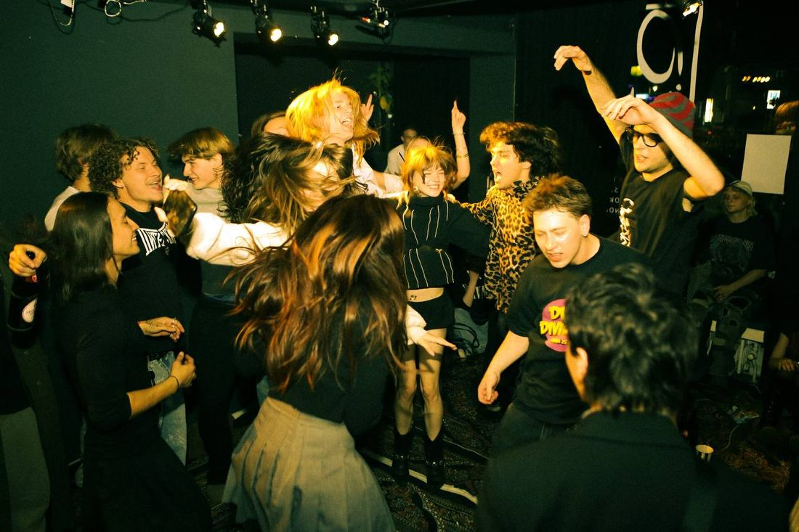
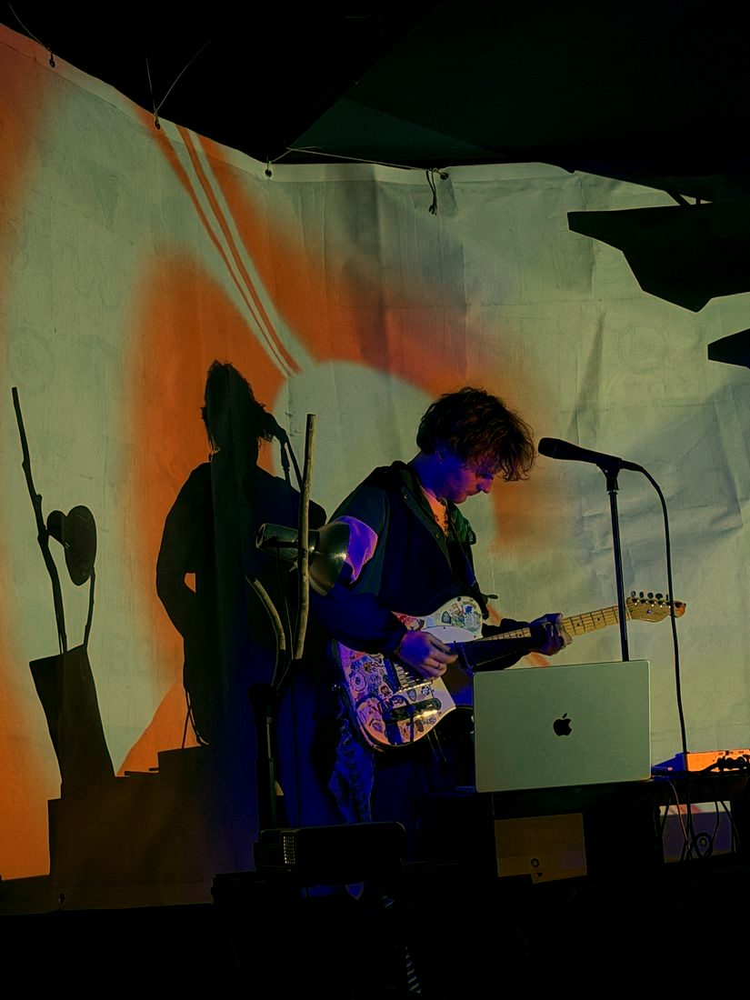
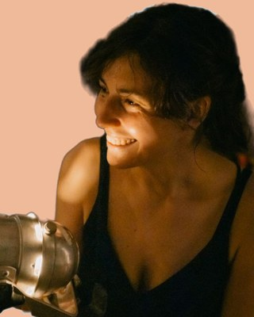
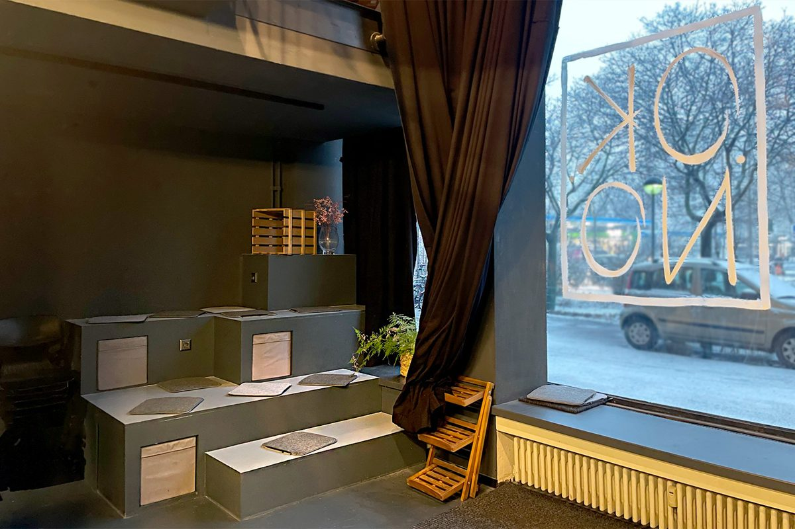
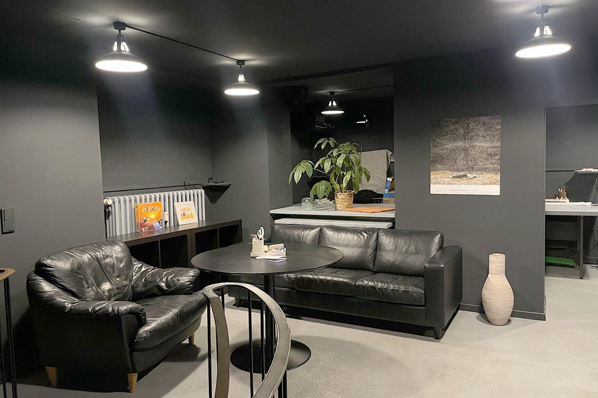

Kulturzentrum OKNO
Brunnenstraße 69 · Berlin-Mitte · U8 Voltastraße
Ein Ort für Vorträge, Konzerte, Kino und Treffen in Berlin-Mitte: zwei Etagen und ein Saal für bis zu 40 Gäste. Dazu Kurse für Kinder und Erwachsene.
So ist es bei uns
Zur Seite wischen



Programm
22.11SO · 12:00 Schattenfiguren für eine Weihnachtskrippe
Small Stories Theater von Maria Yasinover lädt zu einer Familienwerkstatt ein: Wir bauen Schattenfiguren für ein Weihnachtskrippenspiel (Wertep).
Gemeinsam mit Kindern und Eltern lernen wir die Figuren des alten Krippenspiels kennen, sprechen über die Weihnachtsgeschichte und erschaffen ihre Heldinnen und Helden mit eigenen Händen. Und das Wichtigste: Unsere Figuren bleiben nicht einfach schöne Gegenstände. Sie werden die Darsteller eines echten Krippenspiels, das wir an verschiedenen Orten in Berlin aufführen.
Die Künstlerin
Die Figuren hat Mitautorin Ella Adamova entworfen: Puppenbauerin, Bildhauerin und Keramikerin, Schülerin des legendären Sergei Obraszow.
Anmeldung und Fragen: Instagram · Telegram · okno@bgff.de
26.11DO · 18:30 Das heutige Leben der Farbe
Der zweite Vortrag der Reihe „Farbe: von der Geschichte zum Empfinden“.
Warum kann dieselbe Farbe ganz gegensätzliche Gefühle auslösen? Warum ist Rot nicht nur leidenschaftlich, sondern manchmal zurückhaltend, beruhigt Grün nicht immer und ist Weiß längst nicht immer neutral?
Wir halten Farbe gern für Geschmackssache. Aber wie sehr gehören unsere Vorlieben wirklich uns? Warum werden manche Farben zum Symbol einer Epoche, verschwinden aus der Mode und kehren dann zurück?
Im Vortrag geht es darum, wie Farbe heute lebt und wirkt: um ihre emotionale Wirkung, ihr Zusammenspiel mit Licht, Raum und Textur, um Farbe im Interieur, in der Kleidung und in unserer Umgebung. Und darum, warum Farbe nicht nur etwas ist, das wir sehen, sondern auch etwas, das wir fühlen.
Über die Referentin
Olga Linden ist Stylistin und Interior-Dekorateurin. Seit 2014 arbeitet sie mit Privatkunden, Unternehmen, Künstlern sowie Film- und Modeprojekten, als Stylistin, Kostümbildnerin und Dekorateurin. Seit 2021 lebt und arbeitet sie in Berlin. Im Mittelpunkt ihrer Arbeit steht die genaue Frage: nicht nur, wie etwas aussehen soll, sondern welches Gefühl es erzeugen soll.
04.12FR · 18:30 Wege der Avantgarde
Die Avantgarde entwickelte sich gleichzeitig in Europa und in Russland: ungleichmäßig, unterschiedlich und doch mit einem gemeinsamen Zug. Sie war die neue Vorhut der Kunst, mit neuen Medien und dem Versuch, die akademische Ausbildung und die „Hand des Künstlers“ infrage zu stellen. Künstler reisten, lernten sich kennen, schauten einander über die Schulter. Für die Avantgarde war nichts verboten: Jede Handlung konnte zum Kunstwerk werden.
Die Kunsthistorikerin und Dozentin Nadezhda Voronina folgt den Routen der Avantgarde von Kandinsky bis zum „Karo-Buben“ und „Eselsschwanz“, von russischen Künstlergruppen im Ausland bis zum Streit zwischen Chagall und Malewitsch.
Über die Referentin
Nadezhda Voronina ist Kunsthistorikerin und war Dozentin an der Russischen Akademie der Künste. Sie forschte in Sankt Petersburg und München. In ihrer Dissertation befasste sie sich mit der Jahrhundertwende, den Institutionen der Kunst und der Gruppe russischer Künstler in München.
06.12SO · 17:30 Filmclub OKNO × Easy Pieces: Roadmovies
Ein Abend über Filme auf der Straße: von John Fords Western bis zu Dennis Hopper, Jim Jarmusch, Wim Wenders und den Coen-Brüdern. Erst ein Vortrag, dann Gespräch und Drinks.
Einlass ab 17:00, Beginn um 17:30. Der Filmclub wird von Easy Pieces geleitet.
08.12DI · 17:00 Malworkshop „Wintermärchen: ein Abend vor Neujahr“
Über den Workshop
Wir malen mit Acrylfarben eine gemütliche Winterlandschaft auf eine kleine Leinwand: verschneite Bäume, kleine Häuser, das warme Licht der Laternen und die Stimmung eines märchenhaften Winterabends.
Schritt für Schritt entsteht euer eigenes Bild. Es schmückt euer Zuhause zu Weihnachten und Neujahr oder wird ein Geschenk für Familie und Freunde.
Für wen
Alle ab 3 Jahren sind willkommen: mit Kind, als ganze Familie oder ohne Kinder. Malerfahrung braucht ihr nicht, alle Materialien stellen wir.
Leitung
Valeria, Künstlerin und Zeichenlehrerin mit akademischer Kunstausbildung. Seit vier Jahren leitet sie die unterschiedlichsten Kunst-Workshops.
15.12DI · 17:00 Malworkshop „Weihnachtszauber: Male deinen Tannenbaum“
Über den Workshop
Wir tauchen in die festliche Stimmung ein und malen mit Acrylfarben unseren eigenen Weihnachtsbaum auf eine kleine Leinwand: buschige Zweige, bunte Kugeln, Lichterketten und funkelnde Sterne.
Jede und jeder gestaltet ein eigenes Design und nimmt ein leuchtendes Festbild mit nach Hause oder verschenkt es an Familie und Freunde.
Für wen
Alle ab 3 Jahren sind willkommen: mit Kind, als ganze Familie oder ohne Kinder. Malerfahrung braucht ihr nicht, alle Materialien stellen wir.
Leitung
Valeria, Künstlerin und Zeichenlehrerin mit akademischer Kunstausbildung. Seit vier Jahren leitet sie die unterschiedlichsten Kunst-Workshops.
19.12SA Filmclub OKNO × Easy Pieces: Weihnachts-Filmquiz
Wir spielen in zufällig gebildeten Teams ein Quiz rund um Weihnachtsfilme. Auch für alle, die zum ersten Mal mitspielen. Es gibt Preise!
Die Uhrzeit geben wir noch bekannt. Neuigkeiten gibt es beim Filmclub auf Instagram.
Tickets bekommt ihr über den Link beim jeweiligen Termin. Neue Veranstaltungen und Termine veröffentlichen wir hier auf der Website und in unseren Kanälen: Instagram und Telegram.
Kurse
Eine Probestunde in jeder Gruppe kostet 30 €. Klickt auf einen Kurs, um mehr zu erfahren. Mehr über unsere Lehrerinnen erzählen wir auf Instagram.
Für Kinder
Plätze frei Small Stories Theater Kids 100 € im Monat
Hier entstehen kleine Geschichten. Die Kinder basteln Puppen, probieren Masken an, lassen Schatten an der Wand lebendig werden und erfinden Märchen, die sie dann selbst spielen. Nebenbei lernen sie, klar und mutig zu sprechen, ihre Stimme zu hören, ihren Körper zu spüren und zu singen.

Leitung: Maria Yasinover, Regisseurin, Schauspielerin und Pädagogin.Plätze frei Musikwerkstatt 100 € im Monat, 80 € für Kinder der russischen Samstagsschule des BGFF e.V.
Hier beginnt Musik mit Spiel. Schon in der ersten Stunde greifen die Kinder zu echten Instrumenten: kleinen Cajóns, Tamburinen, Maracas, Glöckchen und Xylophonen. Sie lernen, Rhythmus und Stimmung der Musik zu spüren, einander zuzuhören, zu singen und zu improvisieren.
 Leitung: Nika, Musikerin, Sängerin und Songwriterin, zertifizierte Musikpädagogin (EMP). Sie steht seit ihrer Kindheit auf der Bühne und weiß: Musik ist vor allem Freiheit und Freude.
Leitung: Nika, Musikerin, Sängerin und Songwriterin, zertifizierte Musikpädagogin (EMP). Sie steht seit ihrer Kindheit auf der Bühne und weiß: Musik ist vor allem Freiheit und Freude.
Für Erwachsene
Plätze frei Small Stories Theater Lab 120 € im Monat
Ein Studio für alle, die durchatmen und sich auf einen kreativen Prozess einlassen wollen, ohne Erwartungen, ohne Bewertung und ohne Vorkenntnisse. Hier darf man spielen, Neues ausprobieren, in sich hineinhören und jemand anderes sein. Menschen jeden Alters sind willkommen.
Mit Methoden aus Theater und Kunsttherapie finden wir den Schlüssel zu unserem inneren spielenden Kind und zu unserer Kreativität.
Leitung: Maria Yasinover, Regisseurin, Schauspielerin und Pädagogin.
Preise und Rabatte
| Small Stories Theater Kids | 100 € im Monat |
|---|---|
| Musikwerkstatt | 100 € im Monat |
| Small Stories Theater Lab | 120 € im Monat |
| Jede Probestunde | 30 € |
Familienrabatt
Elternteil und Kind: 20 % Rabatt.
Zweites Kind in der Familie: 20 % Rabatt.
Drittes Kind in der Familie: 30 % Rabatt.
Zweiter Kurs für eine Person
Jedes zweite Abo im selben Monat: 20 € günstiger.
Regeln für die Kurse
Teilnahme
Aufsicht
- gilt nur während der Kursstunde, vom Beginn bis zum offiziellen Ende;
- bringt euer Kind bitte pünktlich und holt es direkt nach dem Ende ab: Vor und nach der Stunde gibt es keine Aufsicht;
- im Notfall ruft bitte die Kursleitung an;
- wenn jemand anderes das Kind abholt, sagt bitte vorher Bescheid, damit die Kursleitung weiß, wem sie das Kind übergibt.
Probestunde
Vor dem Kursbeginn könnt ihr eine Probestunde besuchen.
Ferien und Feiertage
Während der Berliner Schulferien und an gesetzlichen Feiertagen finden die Kurse weiter statt. In den Ferien bietet das Kulturzentrum außerdem Kindercamps an, Kursteilnehmer bekommen dafür einen Rabatt.
Fehlstunden
Fehlen aus eigenen Gründen
Eine Rückerstattung oder ein Nachholtermin ist nicht vorgesehen (siehe Erklärung zur Zahlung unten).
Fehlen wegen Krankheit
Einmal im Monat könnt ihr eine verpasste Stunde verschieben. Es gibt drei Möglichkeiten:
- die Stunde an einem anderen Tag in der Gruppe eurer Kursleitung nachholen, wenn ein Platz frei ist;
- die Stunde an einem anderen Tag in einem anderen Studio des Zentrums nachholen, wo Plätze frei sind;
- den Betrag auf den nächsten Monat übertragen: Beim nächsten Abo zahlt ihr eine Stunde weniger.
Zahlung und Kündigung
Die Zahlung erfolgt bis zum 10. jedes Monats
Ihr bezahlt euren Platz in der Gruppe, nicht die einzelnen besuchten Stunden. Der Betrag bleibt gleich, auch wenn ihr einzelne Stunden verpasst oder der Monat Ferien enthält.
Kündigung
- erfolgt schriftlich (per E-Mail, WhatsApp, Telegram oder handschriftlich) bis zum 10. des Monats;
- die Teilnahme endet zum Ende dieses Monats, der laufende Monat wird trotzdem bezahlt;
- ohne schriftliche Kündigung laufen Teilnahme und Zahlung automatisch weiter.
Der Raum von OKNO für eure Ideen
OKNO ist ein gemütlicher Ort, den ihr für eure Vorträge, Workshops, Konzerte, Treffen und Vorführungen nutzen könnt. Wir geben euch gern Raum und Zeit und helfen, wenn ihr möchtet, auch bei der Organisation.
Was euch erwartet
Ein Raum auf zwei Etagen, im Saal bis zu 40 Gäste. Beamer, Leinwand und Tonanlage sind vorhanden.




Wählt euer Format (ab 2 Stunden)
Nur der Saal
Für alle, die alles selbst machen. Wir geben euch den Raum, ihr füllt ihn mit eurer Veranstaltung. Ohne Technik und ohne Werbung von unserer Seite.
Saal mit Technik
Alles wie oben, plus Beamer, Leinwand und Ton. Ideal für Vorträge, Vorführungen und Präsentationen, die ihr selbst bewerbt.
Alles inklusive
Saal, Technik und unsere Unterstützung: Wir erzählen auf Instagram, Telegram und der Website von euch, nehmen euch in unsere Digests auf, teilen es mit unseren Partnern und übernehmen den Ticketverkauf.
Dazu buchbar
- Eine Person vor Ort, die eure Gäste empfängt und während der ganzen Veranstaltung da ist: 50 € pauschal.
- Gezielte Online-Werbung: Das Budget besprechen wir gemeinsam.
So bucht ihr
Schreibt uns, und wir finden einen Termin für euch: Instagram @okno_kultur · Telegram @okno_kultur_admin · okno@bgff.de
Buchung und Stornierung
- Um den Termin zu sichern, zahlt ihr 50 % des Preises an.
- Die restlichen 50 % zahlt ihr eine Woche vor der Veranstaltung.
- Kostenlos stornieren könnt ihr bis spätestens zwei Wochen vor dem Termin. Danach wird die Anzahlung nicht erstattet.
- Nach vollständiger Zahlung ist keine kostenlose Stornierung mehr möglich.
- Die Mietzeit zählt ab dem Moment, in dem ihr den Schlüssel abholt, bis ihr ihn wieder in den Safe legt.
So findet ihr uns
Anmeldung und Fragen
Instagram @okno_kultur
Telegram @okno_kultur_admin
okno@bgff.de
Schreibt uns eine Direktnachricht oder eine E-Mail.